Какая из двух букв ошибочна?
ДНК-полимераза включила T напротив матричной G.

Оба основания химически обычны, но пара G·T нарушает геометрию дуплекса. На схеме верхняя цепь унаследована от исходной молекулы, нижняя только что синтезирована. Эти сведения позволяют восстановить исходную пару G–C. Если убрать обозначения возраста цепей, возможен и другой ответ: матричной могла быть T.
Увидев только G·T, можно ли определить, какое основание удалить?
Нет. Если матрицей была G, следует заменить T на C. Если матрицей была T, следует заменить G на A. Происхождение несоответствия и выбор цепи — два отдельных вопроса.
Как полимераза выбирает нуклеотид
В полимеразном центре сходятся матричное основание, 3′-OH праймера и входящий дезоксирибонуклеозидтрифосфат.
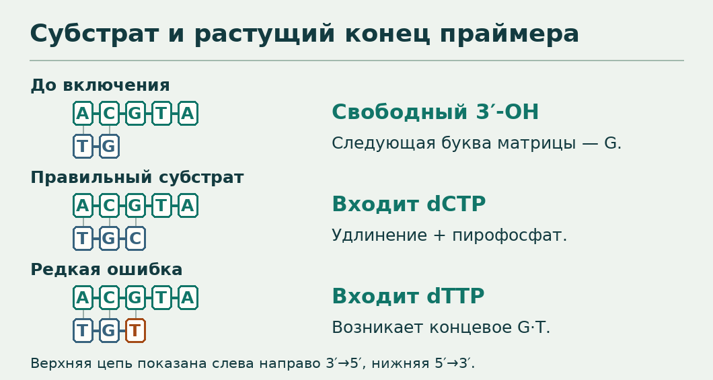
При правильной пространственной ориентации 3′-OH атакует α-фосфат, образуется фосфодиэфирная связь и освобождается пирофосфат. Различия в связывании субстратов и скорости химической реакции вместе определяют селективность. Редкая конфигурация ошибочной пары может пройти этот отбор.
Почему подсчёта водородных связей недостаточно для объяснения точности?
Центр полимеразы чувствителен к форме пары и взаимному расположению реагирующих групп. Даже связавшийся нуклеотид может покинуть центр до образования связи.
Почему скорость входит в оценку селективности
Если неверный субстрат быстро отделяется от фермента, у него мало времени на химическую реакцию. Даже при сходной прочности связывания два субстрата могут резко различаться по скорости образования связи. Поэтому точность полимеразы измеряют, сопоставляя эффективности включения конкурирующих нуклеотидов при заданных концентрациях.
Коррекция на растущем 3′-конце
После ошибочного включения следующая реакция удлинения часто замедляется.
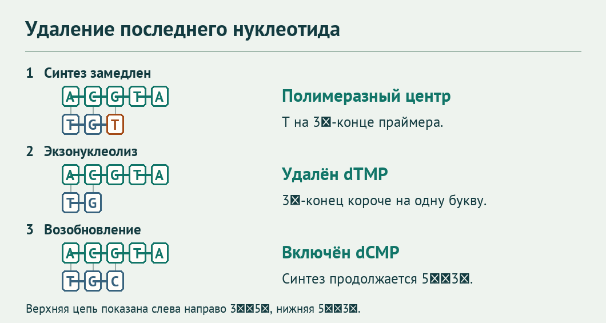
Конец праймера отделяется от матрицы и переходит в экзонуклеазный центр. Гидролиз последней фосфодиэфирной связи освобождает ошибочный дезоксирибонуклеозидмонофосфат. Восстановленный 3′-OH возвращается в полимеразный центр, где синтез продолжается в направлении 5′→3′. У Pol δ и Pol ε эукариот оба активных центра находятся в каталитической субъединице. У бактериальной Pol III коррекцию обеспечивает субъединица ε.
Как изменится положение 3′-конца сразу после коррекции?
Праймер станет на один нуклеотид короче. Направление экзонуклеолиза — 3′→5′. Следующий нуклеотид снова присоединится к свободной 3′-OH-группе.
Когда возникает устойчивая замена
Если G·T сохранилась до следующей репликации, каждая из двух цепей становится матрицей.

Напротив G включается C, напротив T — A. При последующем безошибочном синтезе обе пары воспроизводятся. В одной из двух дочерних молекул произошла фиксация замены G–C → A–T. Сама пара A–T геометрически нормальна. Чтобы установить, что последовательность изменилась, требуется сравнение с предковой последовательностью.
Сколько из четырёх молекул будут иметь изменённую пару ещё через один цикл?
Две из четырёх, если все молекулы одинаково успешно реплицируются, а новых ошибок и отбора нет. Смена G на A в одной и той же ориентации цепи — транзиция.
Как MutS распознаёт несоответствие
После ухода полимеразы ошибочная пара оказывается внутри дуплекса.

Система mismatch repair (MMR) распознаёт несовпадения оснований и короткие петли вставок или делеций. В кристаллической структуре MutS кишечной палочки димер охватывает ДНК, а дуплекс изгибается вблизи G·T. Узнавание и последующие АТФ-зависимые перестройки позволяют привлечь MutL. Структура комплекса показывает геометрию контакта, но сама по себе не устанавливает, какая цепь была синтезирована последней.
Повернуть молекулярную модель
Зелёный — белок, оранжевый — ДНК. Проекция по экспериментальным координатам. Ползунок поворачивает модель вокруг вертикальной оси.
Что позволяет установить структура 1E3M?
Она показывает взаимное расположение MutS и ДНК с G·T. Выбор удаляемой цепи устанавливают в отдельном опыте с различимыми цепями.
Выбор цепи у E. coli
Сразу после репликации участки GATC некоторое время полуметилированы: аденин родительской цепи уже несёт метильную группу, а в новой цепи Dam-метилаза ещё не успела её поставить.

MutS и MutL связывают распознавание несоответствия с действием MutH. MutH надрезает неметилированную цепь у GATC. Хеликаза UvrD и экзонуклеаза участвуют в удалении участка до ошибки и за её пределы. Полимераза заполняет брешь, лигаза соединяет концы.
Должна ли ошибочная пара входить в последовательность GATC?
Нет. GATC даёт сигнал для выбора цепи на расстоянии. Удаляемый участок должен захватить несоответствие. Система Dam–MutH характерна для E. coli и части родственных бактерий.
Как ориентируется MMR у человека
Комплекс MutSα (MSH2–MSH6) узнаёт многие одиночные несоответствия и небольшие петли.
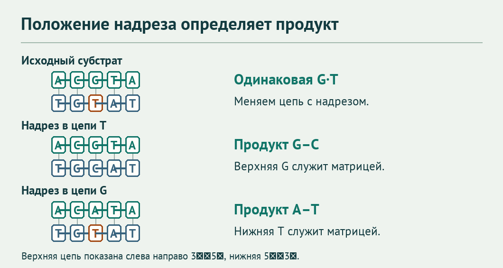
Разрывы непрерывности новой цепи и ориентация скользящего зажима PCNA помогают направить надрезы эндонуклеазы MutLα (MLH1–PMS2). В одном из восстановленных путей EXO1 удаляет участок, Pol δ достраивает его, лигаза замыкает остов. Особенно нагляден пример ещё не сшитых фрагментов Оказаки. Механизмы маркировки ведущей цепи изучать сложнее.
В опыте с G·T перенесли исходный разрыв с цепи T на цепь G. Какие продукты ожидаются при коррекции по сигналу разрыва?
При удалении участка цепи T продуктом станет G–C. При удалении участка цепи G продуктом станет A–T. Именно зависимость результата от положения разрыва проверяет выбор цепи.
Как проверить направление коррекции
При одинаковой последовательности приготовляют два субстрата, различающихся только цепью, в которой находится надрез. Третий дуплекс с согласованными основаниями позволяет оценить фон. Если продукты первых двух реакций различаются предсказуемо, это свидетельствует о направленности процесса. Результат в очищенной системе показывает достаточность выбранных компонентов в условиях опыта.
Почему меняется длина повторов
На участке коротких тандемных повторов праймер и матрица могут снова спариться с небольшим сдвигом.

Если одна повторяющаяся единица образует петлю в новой цепи, новая цепь длиннее. Если петля лежит в матрице, полимераза может пропустить эту единицу. При недостаточности MMR такие различия чаще сохраняются. Изменчивость длины микросателлитов служит измеримым следствием нарушенной коррекции.
В матрице пять повторов CA, в продукте четыре. Где могла образоваться петля?
В матрице. Один матричный повтор оказался вне спаренного участка и был пропущен. Для вывода о механизме по реальному образцу нужны дополнительные данные.
Как в ДНК появляется урацил
Цитозин может превратиться в урацил уже в составе двойной спирали. Для этого достаточно гидролитического дезаминирования. Реакция возможна между двумя раундами репликации, когда полимераза вообще не движется по этому участку.
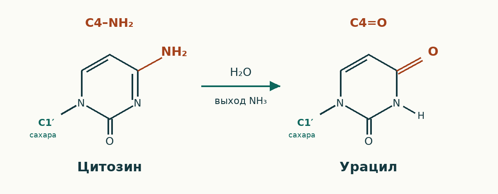
Что меняется в паре оснований
У цитозина аминогруппа при C4 служит донором водородной связи, а N3 способен принимать водородную связь. После дезаминирования при C4 оказывается карбонильный кислород, а N3 в обычной кетоформе урацила несёт водород. Меняется рисунок доноров и акцепторов. Обычному урацилу комплементарен аденин. Против него на месте прежней пары C–G пока остаётся гуанин. Несоответствие U·G и последующая замена пары — разные состояния молекулы.
Два происхождения одного основания
Урацил может попасть в ДНК и при включении dUMP из dUTP напротив A. В этом случае уже образована комплементарная пара U–A. Гликозилаза способна удалить урацил в обоих случаях. При последующей достройке напротив G встанет C, напротив A — T. Поэтому восстановление исходной последовательности требует двух независимых источников специфичности: распознавания химической природы U ферментом и выбора входящего нуклеотида по второй цепи.
Другая судьба метилированного цитозина
При дезаминировании 5-метилцитозина метильная группа при C5 сохраняется. Продуктом становится тимин. Возникает пара T·G с двумя обычными основаниями ДНК. Такой субстрат распознают, в частности, тимин-ДНК-гликозилаза TDG и белок MBD4. Из одной записи T·G нельзя установить, возник ли тимин при дезаминировании или ошибочном включении.
Если UNG удалит U из U–A, появится ли на его месте C?
Матричная A направит включение T. UNG определяет, что удалить; противоположная цепь определяет, что синтезировать.
Урацил и эксцизионная репарация оснований
Проследим за одним нуклеотидом в ядерной ДНК человека. Верхняя цепь исходно содержит 5′–ACT–3′, нижняя — 3′–TGA–5′. На месте центрального C после дезаминирования остался U. Перед клеткой две последовательные задачи: удалить изменённое основание и восстановить непрерывную цепь с правильной буквой. На всех шести схемах G в нижней цепи занимает одно и то же место.
Как читать схемы
Прямоугольник dR обозначает остаток дезоксирибозы, круг P — фосфат. В мостике между сахарами показаны кислороды O3′ левого и O5′ правого нуклеотида. Короткая вертикальная линия соединяет сахар с основанием. Пунктир между основаниями обозначает спаривание без указания числа водородных связей. Левый и правый края рисунка продолжаются в остальную хромосому.
1. Дезаминирование цитозина
При гидролизе цитозина аминогруппа у атома C4 замещается кислородом карбонильной группы. В составе цепи остаётся тот же сахар, связанный с тем же участком остова. Меняется химическая природа основания. Матрица будущей репарации по-прежнему содержит G.

При следующей репликации G направит включение C, а U может направить включение A. В потомстве цепи с U замена C–G на T–A может закрепиться при дальнейшем копировании. Поэтому полезно различать время возникновения урацила, первое ошибочное прочтение и появление наследуемой замены.
2. UNG освобождает урацил
Ядерная форма урацил-ДНК-гликозилазы UNG2 захватывает доступное основание в специфический карман. Урацил выходит из стека соседних оснований. В активном центре гидролизуется связь между аномерным атомом C1′ дезоксирибозы и N1 урацила. Освобождается урацил; атомы сахара и оба соседних фосфата остаются в ДНК.

Безосновный, или AP-сайт, содержит дезоксирибозу без пуринового или пиримидинового основания. Она может переходить между циклическими формами и небольшой долей открытой альдегидной формы. В проекции показан один условный сахар. Длина цепи на этой стадии сохраняется, хотя в одной позиции уже нечего читать.
3. APE1 надрезает остов
AP-эндонуклеаза APE1 гидролизует фосфодиэфирную связь непосредственно перед безосновным сахаром при чтении повреждённой цепи от 5′ к 3′. Кислород 3′ предыдущего нуклеотида получает водород. На левом фрагменте возникает свободный 3′-OH. Справа остаётся 5′-концевой дезоксирибозофосфат (5′-dRP), всё ещё связанный со следующим нуклеотидом.
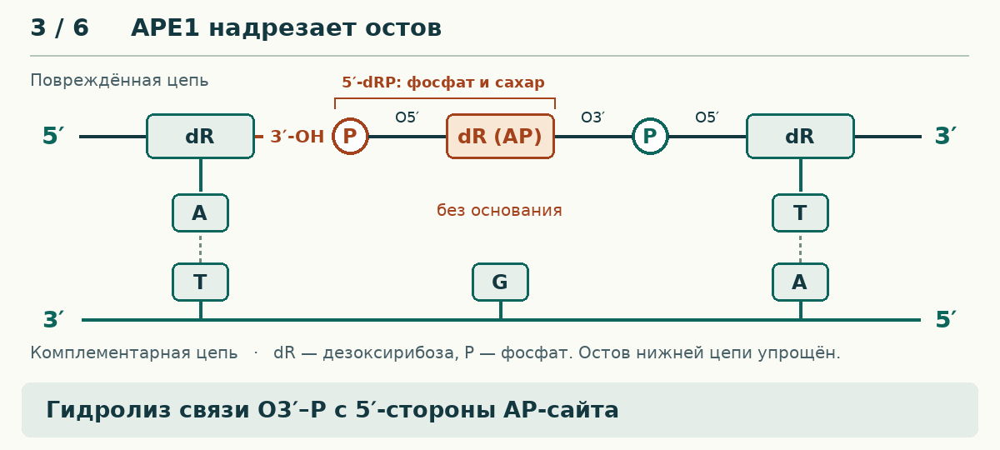
После надреза сахар повреждённого звена ещё находится в молекуле. Это отличает продукт APE1 от однонуклеотидной бреши с чистыми концами. Слева уже есть затравка для синтеза. Справа требуется обработать конец, чтобы впоследствии его могла использовать лигаза.
4. Pol β удаляет 5′-dRP
Лиазный домен ДНК-полимеразы β взаимодействует с открытой формой безосновного сахара. В реакции β-элиминирования разрывается связь C3′ этого сахара с кислородом фосфатного мостика к следующему нуклеотиду. Остаток сахара уходит вместе со своим 5′-фосфатом. Второй фосфат остаётся на 5′-конце правого фрагмента.
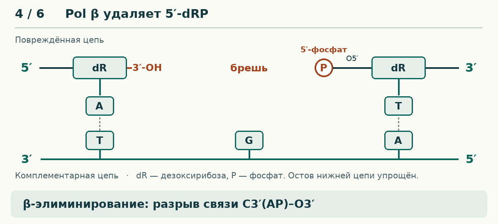
В изображённой последовательности после удаления 5′-dRP между 3′-OH и 5′-фосфатом отсутствует одно звено. Для наглядности лиазная и полимеразная реакции Pol β показаны раздельно. В реальном комплексе заполнение и обработка конца могут быть сопряжены; рисунок фиксирует химическую задачу каждой активности.
5. Pol β встраивает dCMP
В полимеразном центре основание входящего dCTP спаривается с G противоположной цепи. Кислород свободной 3′-OH-группы атакует α-фосфат dCTP. Образуется фосфодиэфирная связь, а β- и γ-фосфаты покидают комплекс в составе пирофосфата. В цепь входит новый остаток дезоксицитидилата — со своим сахаром и фосфатом.
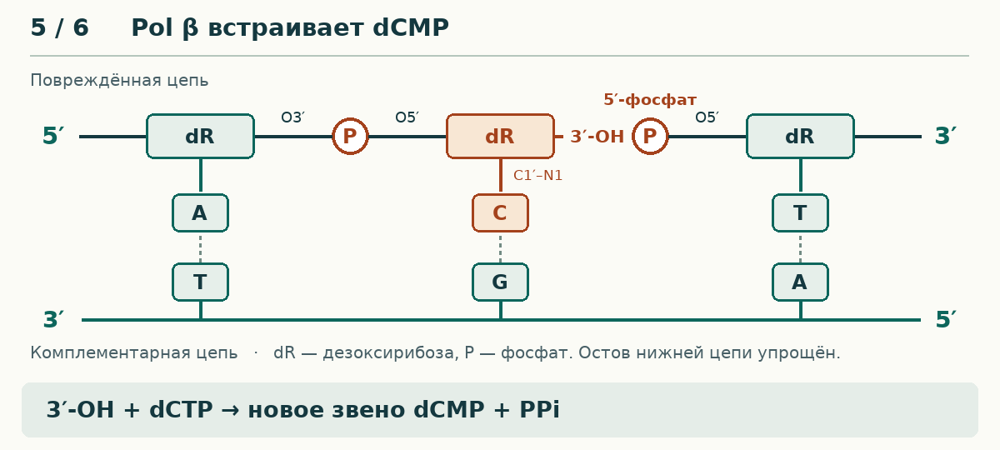
У нового C есть собственная свободная группа 3′-OH. Напротив неё лежит готовый 5′-фосфат следующего нуклеотида. Теперь все основания на месте. Сохранился единичный разрыв остова, или ник. Различие между брешью и ником определяет, нужен ли ещё один акт синтеза.
6. Лигаза замыкает ник
АТФ-зависимая ДНК-лигаза активирует 5′-фосфат, временно присоединяя к нему AMP. Затем 3′-OH нового нуклеотида атакует этот фосфат. После выхода AMP образуется последняя фосфодиэфирная связь. В короткозаплаточной BER у человека в лигировании может участвовать лигаза IIIα в комплексе с XRCC1; лигаза I также способна завершать репарацию.
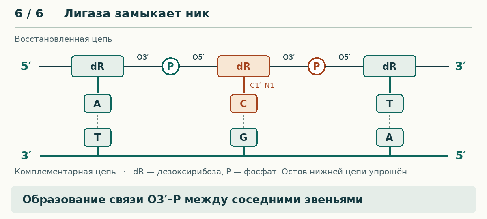
Последовательность участка вновь содержит C–G. Старая матричная G сохранилась на всех стадиях. Цитозин, его дезоксирибоза и 5′-фосфат в восстановленном звене происходят из dCTP. Фосфат на границе с правым соседом сохранился от исходной цепи. Это позволяет проследить судьбу вещества даже тогда, когда исходная и конечная последовательности букв одинаковы.
Короткая и длинная заплата
На разобранном пути заменяется один нуклеотид. Если остаток безосновного сахара химически изменён и плохо удаляется dRP-лиазой, возможна длиннозаплаточная BER. При синтезе нескольких звеньев полимераза вытесняет 5′-конец соседнего участка. Образуется одноцепочечный лоскут, несущий остаток повреждения. FEN1 отщепляет лоскут, затем лигаза I замыкает ник. Критерий для различения этих вариантов — сколько нуклеотидов вошло в репарационную заплату и как был удалён повреждённый остаток.
Опыт с двумя метками
Мысленно пометим в двух одинаковых молекулах разные атомы: в первой — атом кольца урацила, во второй — атом углерода его дезоксирибозы. Затем остановим реакцию после UNG, после APE1 или после dRP-лиазной реакции. Мысленный опыт позволяет различить удаление основания, надрез и удаление сахара, даже если все три события произошли в одном положении последовательности.
После добавления dCTP появилась пара C–G. Как установить, состоялось ли лигирование?
Спаривание оснований и непрерывность одной цепи проверяют раздельно. После денатурации ник даёт два более коротких фрагмента повреждённой цепи; лигированный продукт сохраняет полную длину. Для интерпретации сравнивают образцы с лигазой и без неё, учитывая положение метки.
На чём основана последовательность стадий
В опытах с очищенными белками удалось восстановить полный цикл репарации урацилсодержащей ДНК. Отдельные измерения показали вторую активность Pol β — высвобождение 5′-dRP. Вместе с экспериментальными структурами эти результаты связывают наблюдаемую форму комплекса с химическими продуктами реакции.
Урацил в кармане гликозилазы
В структуре человеческой урацил-ДНК-гликозилазы 1EMH аналог урацилсодержащего нуклеотида выведен из стека оснований.

Белок окружает вывернутое основание. Для фиксации комплекса исследователи использовали изменённый фермент и субстратный аналог. Эта структура помогает понять, как белок получает доступ к основанию в двойной спирали. Последовательность реакций восстанавливают сопоставлением структурных и биохимических данных.
Повернуть молекулярную модель
Зелёный — белок, оранжевый — ДНК. Проекция по экспериментальным координатам. Ползунок поворачивает модель вокруг вертикальной оси.
Можно ли измерить скорость удаления урацила по одной кристаллической структуре?
Нет. Структура фиксирует взаимное расположение атомов в одном состоянии. Для скорости нужны измерения количества субстрата или продукта во времени.
УФ-повреждения и тиминовый димер
Два соседних T в одной цепи ДНК — это два основания, каждое из которых присоединено к своей дезоксирибозе. Сахара соединены через фосфат. При образовании тиминового димера химическое изменение происходит внутри пары соседних оснований. Фосфатный мостик между их сахарами сохраняется.
Два тимина образуют циклобутановое кольцо
В каждом тимине имеется двойная связь C5=C6. Поглощение УФ-фотона может перевести основания в возбуждённое состояние. При подходящем взаимном расположении двух соседних тиминов происходит фотохимическое [2+2]-циклоприсоединение.
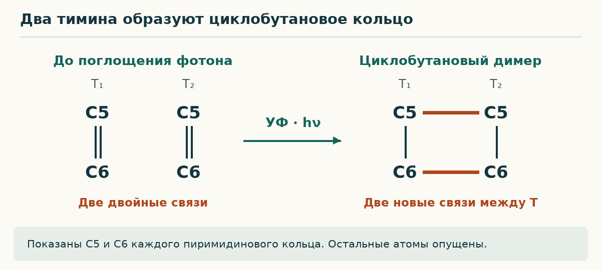
Возникают две межосновные σ-связи — C5–C5 и C6–C6. Прежние связи C5=C6 становятся одинарными. Четыре атома углерода теперь образуют циклобутановое кольцо. Для ДНК характерен цис-син циклобутановый пиримидиновый димер (CPD). Обозначение описывает пространственное расположение колец; плоская схема показывает только связность. Сахара обоих тиминов сохраняют связь с основаниями, и остов цепи остаётся непрерывным.
Повреждение ограничивает подвижность оснований
Две новые ковалентные связи ограничивают поворот тиминов друг относительно друга. Локально изменяются укладка оснований и геометрия дуплекса. Это может задержать репликативную ДНК-полимеразу или РНК-полимеразу II.
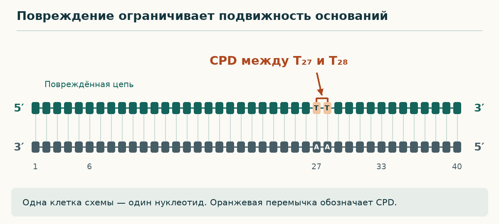
Если специализированная ДНК-полимераза η включает два A напротив тиминового CPD, синтез за повреждением может продолжиться. Само циклобутановое кольцо при этом сохраняется. У человека удаление CPD путём NER и его обход при репликации имеют разные продукты. Кроме CPD ультрафиолет вызывает и другие повреждения, например (6–4)-фотопродукты с иной связностью атомов.
Должны ли два тимина быть напротив друг друга в двойной спирали?
Для рассматриваемого CPD два T соседствуют в одной цепи. На второй цепи напротив них расположены A. Водородные связи T с A и новые ковалентные связи между T — разные взаимодействия.
Как NER вырезает повреждённый участок
Проследим за тиминовым димером в ядре клетки человека. Верхняя цепь модельного дуплекса содержит 40 пронумерованных нуклеотидов. Нижняя цепь комплементарна и антипараллельна верхней. Раскрытие, два надреза и достройку удобно различать по тому, в каком именно фрагменте в каждый момент находятся два связанных тимина.
Два пути распознавания приводят к раскрытию ДНК
При глобальной геномной NER комплекс UV-DDB облегчает распознавание слабо искажающего спираль CPD, а XPC участвует в обнаружении нарушенного спаривания и привлечении следующих факторов. При транскрипционно-сопряжённой NER сигнал возникает, когда РНК-полимераза II останавливается перед повреждением в матричной цепи.

Далее действует общий аппарат. Комплекс TFIIH раскрывает небольшой участок ДНК; XPD участвует в проверке повреждения. XPA и RPA помогают организовать открытый комплекс, причём RPA взаимодействует с неповреждённой одноцепочечной ДНК. Две границы раскрытого участка предоставляют разные посадочные места нуклеазам.
Два надреза приходятся на одну цепь
Верхнюю цепь на карте читаем слева направо от 5′ к 3′. Комплекс XPF–ERCC1 гидролизует фосфодиэфирную связь со стороны 5′ от повреждения. XPG надрезает ту же цепь со стороны 3′. Вторая цепь сохраняется и позднее служит матрицей.

На учебной карте обе границы заданы точно: между позициями 5 и 6 и между 33 и 34. Связанные тимины находятся в позициях 27 и 28. На 5′-стороне в удаляемый участок попадает больше неповреждённых оснований. Номера на карте иллюстрируют асимметрию человеческой NER; положение надрезов может варьировать.
Димер остаётся внутри 28-нуклеотидного продукта
После двух надрезов от повреждённой цепи отделяется олигонуклеотид, включающий оба тимина димера. На карте он начинается с позиции 6 и заканчивается позицией 33. При включении обеих границ его длина равна 33 − 6 + 1 = 28 нуклеотидов.

Внутри продукта находятся 21 нуклеотид перед димером, два связанных тимина и пять нуклеотидов после них. Димер остаётся химически целым в высвобожденном фрагменте. У человека обычно обнаруживают продукты порядка 24–32 нуклеотидов. В опыте Huang и соавторов участок с тиминовым димером выходил в составе фрагментов длиной 27–29 нуклеотидов.
Брешь заполняется по противоположной цепи
Свободный 3′-OH на левом краю бреши служит затравкой. Репаративный синтез идёт от 5′ к 3′ по сохранившейся комплементарной цепи. В позициях 27 и 28 напротив двух A включаются два обычных тимидиновых нуклеотида. Они соединены обычным сахарофосфатным остовом; циклобутановой связи между новыми основаниями нет.
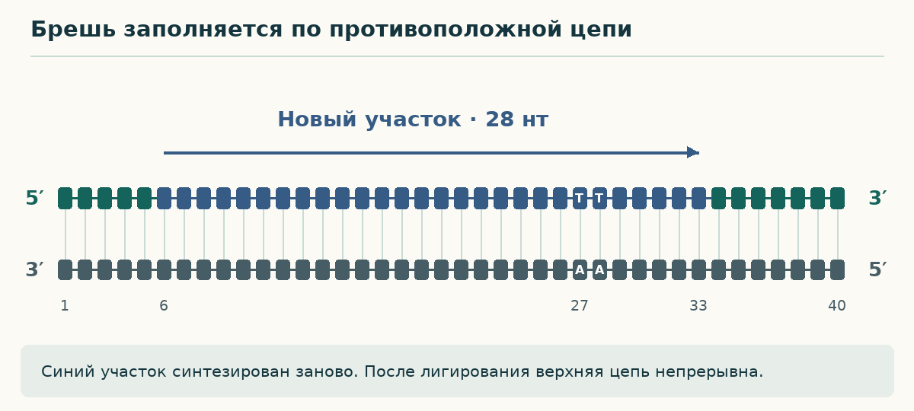
После заполнения бреши между последним добавленным нуклеотидом и 5′-фосфатом правого фрагмента остаётся ник. Лигаза восстанавливает непрерывность остова. На карте надрезы, выход фрагмента и синтез разнесены по кадрам для отслеживания вещества; в клетке отдельные стадии могут быть согласованы во времени.
Почему NER способна удалить химически разные повреждения?
Нуклеазы разрезают фосфодиэфирный остов у границ открытого комплекса. Химически изменённые основания уходят внутри олигонуклеотида. Их собственные связи могут сохраниться.
Состав человеческой системы исследовали на ДНК с одиночным CPD. Освобождённый фрагмент может временно оставаться связанным с белковым комплексом. Распознавание и эксцизия CPD · Судьба удалённого олигонуклеотида
Как проследить судьбу вырезанного фрагмента
Двойной надрез можно обнаружить по короткому фрагменту, если метка попадёт в вырезанный участок. В опыте Huang и соавторов длина продукта и картирование связей по обе стороны от повреждения показали асимметричную эксцизию: надрезы приходились приблизительно на 22-ю фосфодиэфирную связь с 5′-стороны и 6-ю с 3′-стороны. Среди продуктов были олигонуклеотиды длиной 27–29 нуклеотидов. Номера позиций 1–40 в модели введены для обучения. Huang и соавт., 1992
Переместите метку
На карте надрезы находятся между 5 | 6 и 33 | 34. Представьте, что единственная метка ковалентно связана с выбранным нуклеотидом. До изменения положения метки предскажите, окажется ли она в коротком продукте.
Что видно на геле
После денатурации короткие меченые продукты отделяются от длинных цепей. Обнаружение меченого 28-мера в учебной модели говорит, что метка ушла с фрагментом такой длины. По одной длине нельзя определить, где внутри него находится димер: для этого картируют концы относительно повреждения. Образец без повреждения показывает фон неспецифического расщепления. Образец с меткой за пределами заплаты позволяет проверить, зависит ли сигнал короткого продукта от положения метки.
После переноса метки из позиции 33 в позицию 34 короткая полоса исчезла. Прекратилась ли эксцизия?
Обе реакции могут пройти одинаково. Позиция 33 входит в удаляемый фрагмент, а 34 остаётся в правом участке верхней цепи. Исчезновение сигнала говорит о месте метки.
Сколько ошибок доходит до следующего цикла
Оценки точности всегда относятся к заданному знаменателю: числу включённых нуклеотидов, числу репликаций локуса или числу клеточных делений.
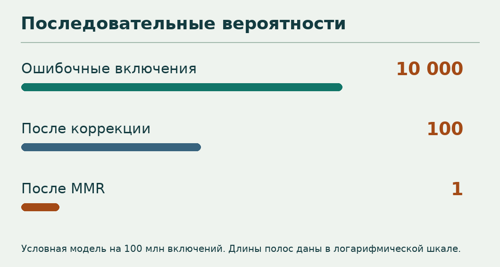
В учебной модели на 10⁸ включений приходится 10⁴ ошибочных. Коррекция на 3′-конце удаляет 99 % ошибок, а MMR исправляет 99 % оставшихся. До следующей репликации в среднем дойдёт одно несоответствие на 10⁸ включений. Эти условные числа описывают последовательные стадии, а не универсальные константы клетки.
При том же исходном числе ошибок MMR исправляет только 90 % оставшихся. Что ожидается?
После коррекции останется 100 несоответствий. Десятая часть из них, то есть в среднем 10, сохранится. Это десятикратное увеличение относительно исходной модели.
Ожидание и отдельная клетка
Среднее значение, равное единице, допускает циклы без ошибок и циклы с несколькими ошибками. Для перехода от числа несоответствий к частоте наследуемых замен нужно учесть их судьбу при следующем удвоении и способ отбора дочерних молекул для анализа. В модельном расчёте ошибки считаются до этого этапа.
Как различить четыре механизма
Сначала установите химическую природу субстрата и его положение.

Ошибочный нуклеотид на 3′-конце доступен корректорскому центру. Внутренняя неправильная пара после синтеза может потребовать MMR и сигнала цепи. Урацил служит субстратом гликозилазы в пути BER, а пиримидиновый димер — субстратом NER у человека. Затем укажите первый удаляемый продукт, состояние остова и источник информации для достройки. Так можно различить пути даже при одинаковой конечной последовательности.
В двух образцах восстановлена C–G. В одном промежуточном образце найден AP-сайт, в другом — удалённый участок новой цепи, содержащий T. Какие пути согласуются с данными?
В первом случае возможна BER после дезаминирования C. Во втором — направленная MMR после включения T напротив G. Одна конечная пара не позволяет установить путь без промежуточных продуктов.
Литература и структуры
Схемы построены для занятия. Модели показывают выбранные атомы из открытых координат PDB; расчёт частот использует условные числа.